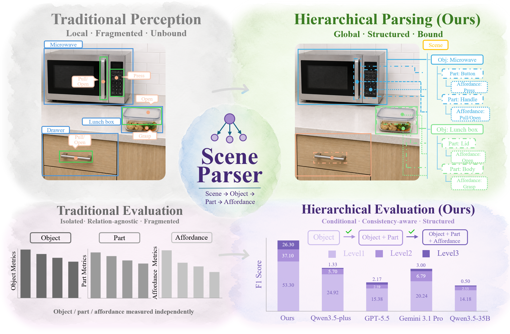
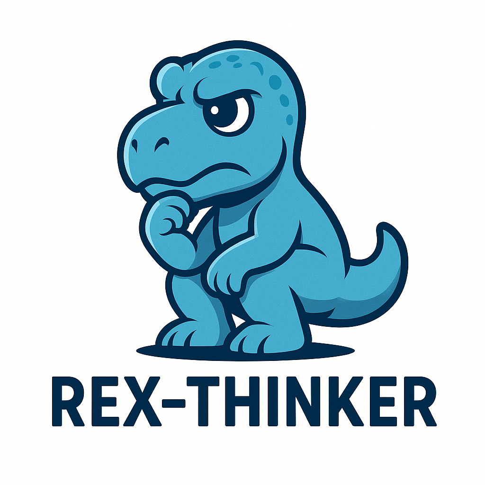
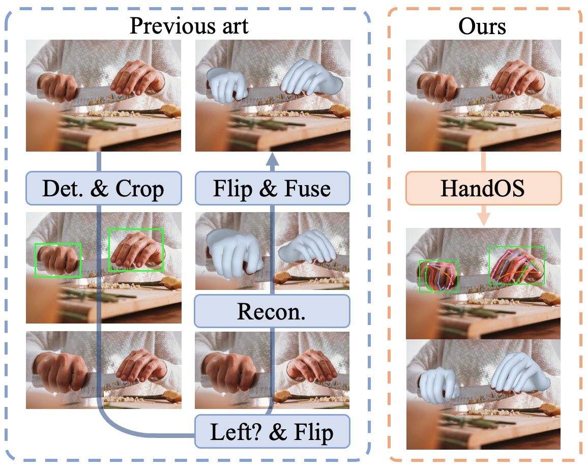
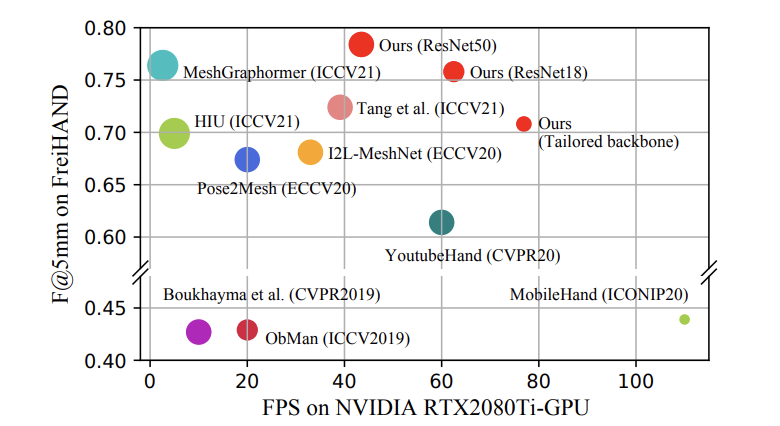
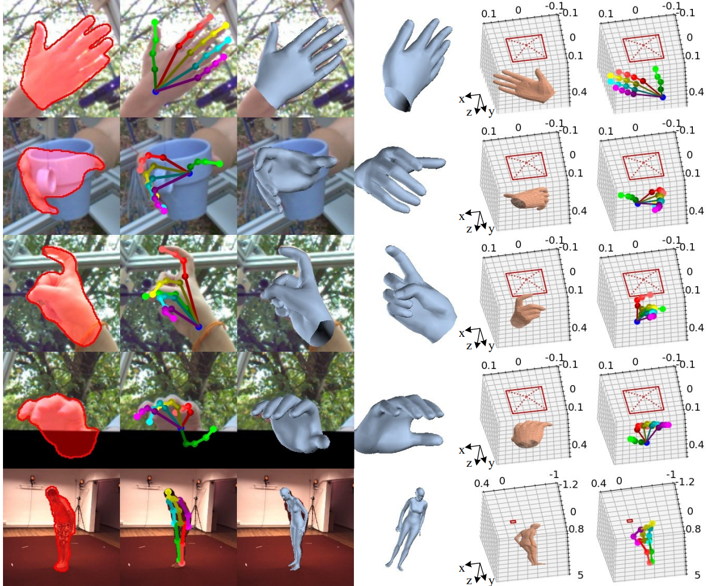
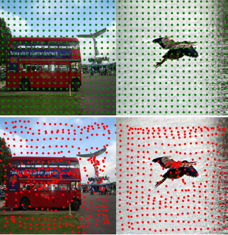
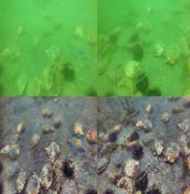

GitHub
GitHub
 LinkedIn
LinkedIn
Human Interaction Prior
Scene parsing, reconstruction, and hand-object reconstruction.
Assistant Professor at Zhongguancun Academy
I lead ZGCA HMI Lab, working on Interaction-centric Embodied AI.
I am currently an Assistant Professor at Zhongguancun Academy. Previously, I was an assistant research fellow at Peking University and IDEA-CVR, working closely with Prof. Lei Zhang.
Before joining PKU, I spent 4 years in industry at Kuaishou and Xiaobing, working closely with Dr. Baoyaun Wang. I received my Ph.D. from the Institute of Automation, Chinese Academy of Sciences in 2020 under Prof. Junzhi Yu, and my B.S. from Chengdu University of Technology in 2015.
If you are interested in ZGCA and my research directions, please contact me.
My work sits at the intersection of computer vision, robotics, graphics, and human-machine interaction.
Scene parsing, reconstruction, and hand-object reconstruction.
World model and action generation for embodied interaction.







A temporal detection method based on anchor and feature offset refinements.

GAN-RS elevates underwater visual quality for real-time robotic perception.
Browse first- or corresponding-author papers, co-author papers, technical reports, and book in the redesigned full publication page.